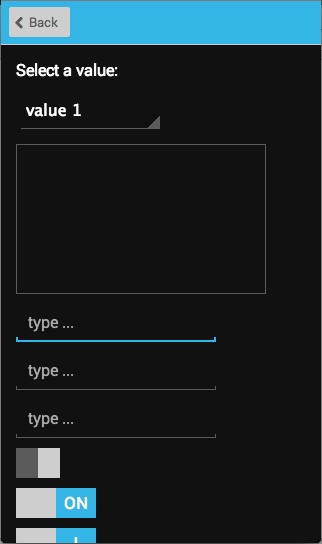
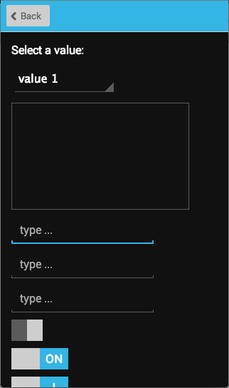
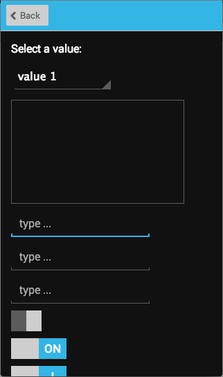
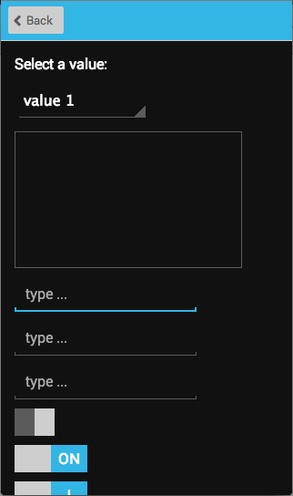

VS Toolkit, the mobile HTML5 toolkit used for VSD
This toolkit was created to easily develop Hybrid Applications for mobile devices
For WebApp others solutions exit
 

 

Framework driven by a component approach and based on objects.
The Toolkit design, was oriented to support embedded devices.
It works on a Raspberry PI!
Implements one-way reactive data flow which reduces data update and helps development.
Events, Callbacks, and "Tasks" are executed into a scheduler, that ensures:
The IDE ViniSketch Designer (VSD) use this toolkit for creating application.
You can download this project in either zip or tar formats.
You can also clone the project with Git by running:
$ git clone git://github.com/vinisketch/VSToolkitget the source code on GitHub : vinisketch/VSToolkit